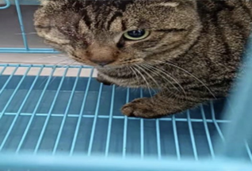
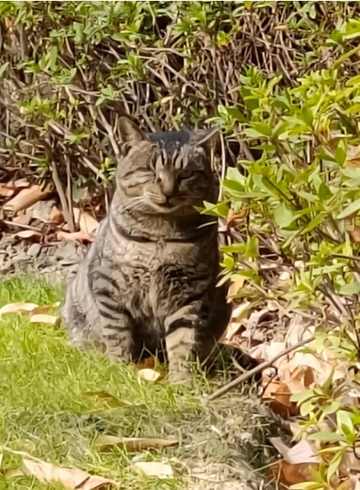
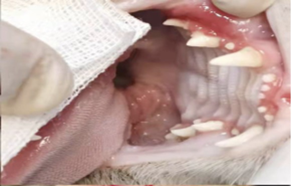
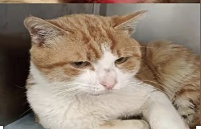
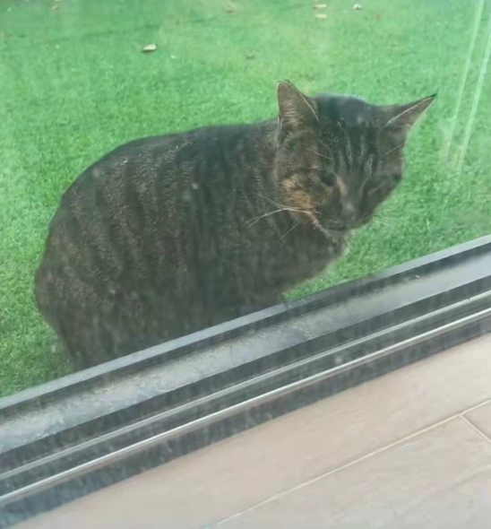
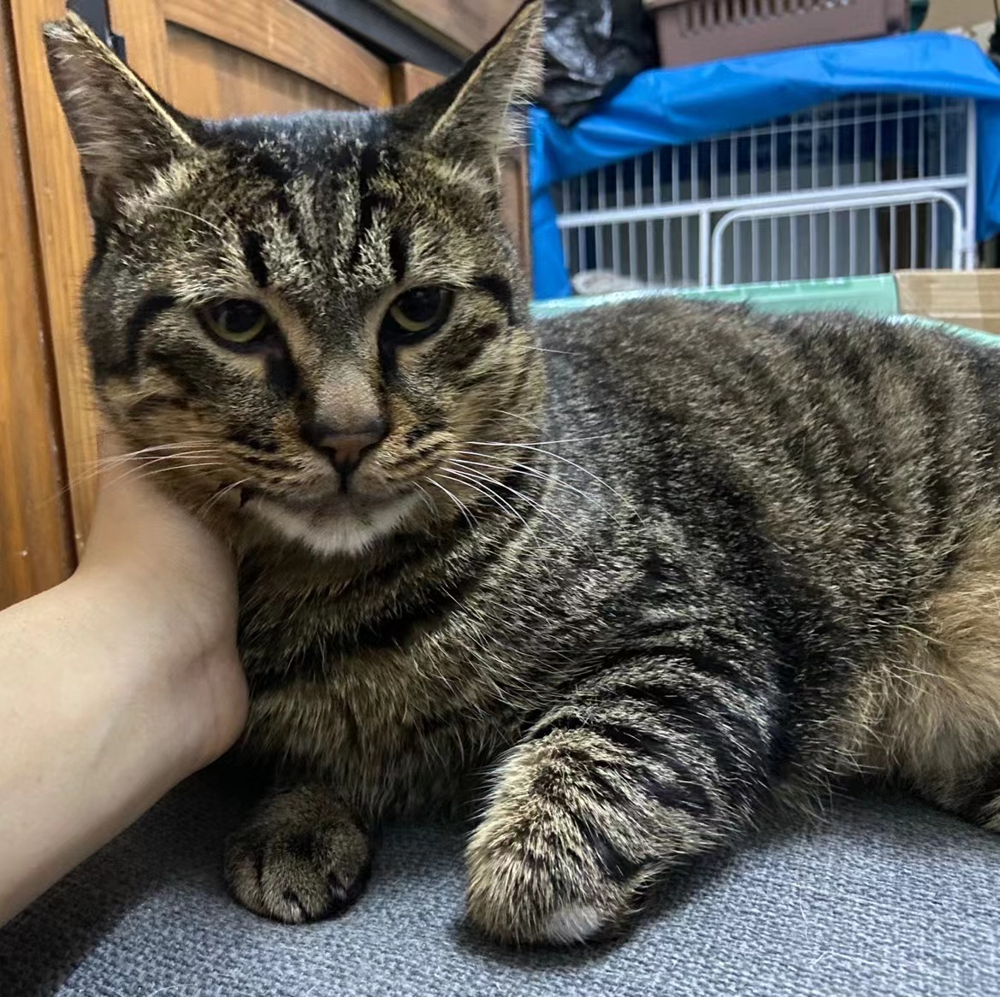

爱心人士购买营养猫粮，保障流浪猫健康，避免剩菜剩饭等破坏环境、不科学的喂养
用容器盛放猫粮并随时清理，不随意丢撒破坏地面卫生
定期更换/清洗猫粮碗和水碗，确保卫生
目前主要在四个地点投放猫粮，早晚各一次
考虑到以后小区业主和流浪猫能和谐共处，尽可能地避免人猫纠纷。我们在小区物色了四个比较隐蔽和成熟的地方，作为专门的投喂点。
一来可以科学有序地进行小区的流浪猫管理；二来也可以减少流浪猫和厌猫人士的近距离接触，避免不必要的冲突和矛盾。
| 治疗前 | 治疗后 | 治疗过程 |
|---|---|---|
|  |  | 2021年12月发现了这只一只眼睛坏死的大狸花猫，用诱捕笼将它抓捕后送医摘除眼球同时绝育，在医院休养半个月后出院放归。 |
|  |  | 2021年12月在24号楼下发现在此处停留求救的患严重口炎的橘猫，送医做了全口拔牙救治后康复，并绝育放归。 |
|  |  | 2021年12月业主在院子里发现向她求救的生病猫咪，送医后诊断为猫瘟，救治后康复目前在休养中，因其亲人性格温顺，后期打算给它找领养。 |
| ······ | ······ | ······ |